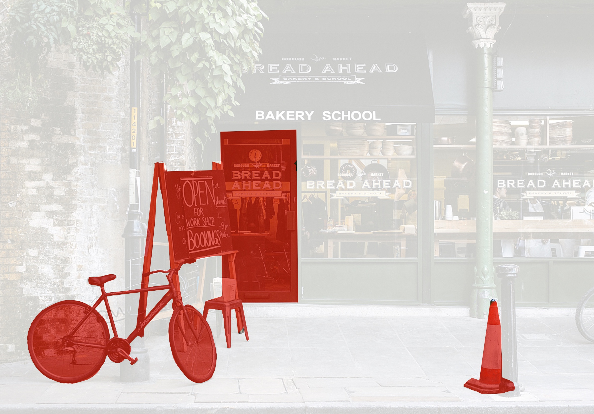
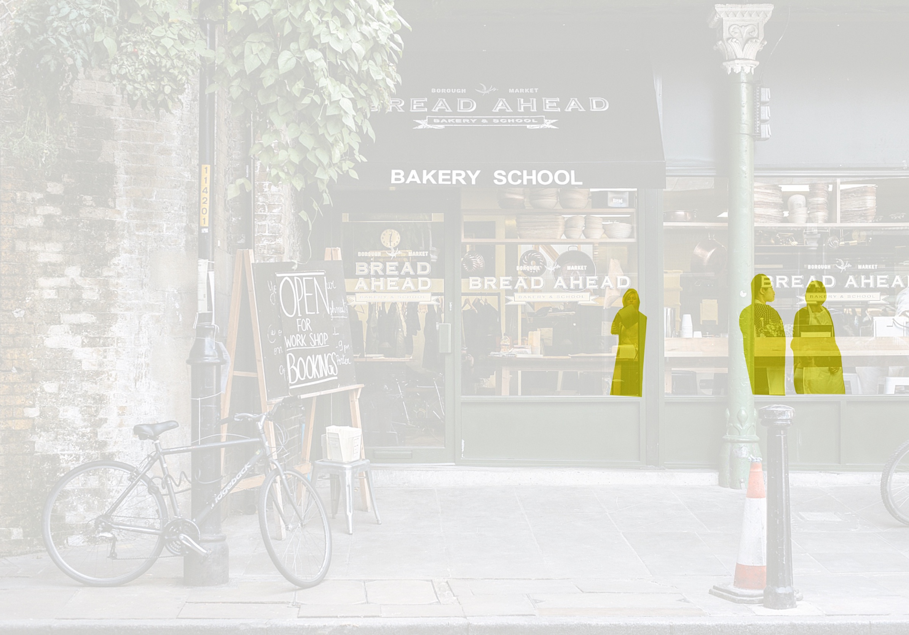

See the Benefits of Horizon
Reduced Vision

Reduced vision leads to decreased mobility by making it more difficult to navigate through environments safely, efficiently and independently.
AR Enhanced Vision

Horizon Real Time Object Tracking with Augmented Reality (AR) can increase mobility of people with reduced vision, by using visual markers to highlight environmental obstacles.
See More with Horizon
Multiple Object Tracking (MOT) uses advanced computer vision to track multiple objects, such as pedestrians, cars, animals and inanimate objects in real time. Current MOT algorithms benefit from Deep Learning (Gioele Ciaparrone, Francisco Luque Sánchez et al. 2019). These algorithms determine the number of objects in each frame and keep track of their identity (Sridykhan 2019).
Movable Objects
People
Stationary Objects

Horizon Real Time Object Tracking detects targets, marks them with a "boundary box" and other visual aids, while also tracking them in real time. Our tracking technology is based on Deep Learning algorithms for higher Object Tracking accuracy. Horizon can increase environmental target awareness greatly for users with reduced vision, which in turn improves mobility.

Partner with Horizon
Horizon is an integratable technology that allows for development of advanced assisting equipment. Similar technology can be found in auto-piloted cars, machine learning algorithms, face recognition software and product shape scanning.
The purpose of developing this technology is to bring about a society where everyone can have an equal footing regardless of their background and disabilities. We aim to help those who grow up with disabilities function
better in their daily lives.
Join us as we create a better future for the visually impaired!